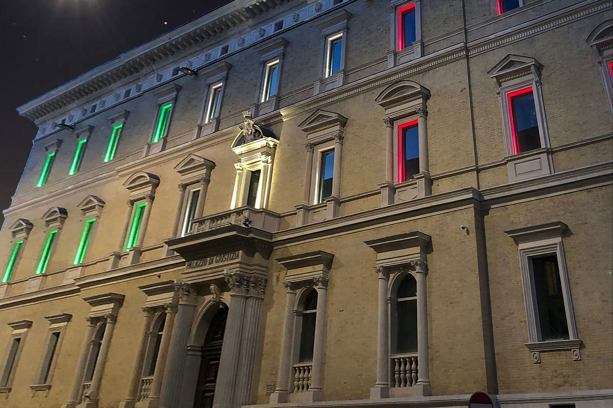
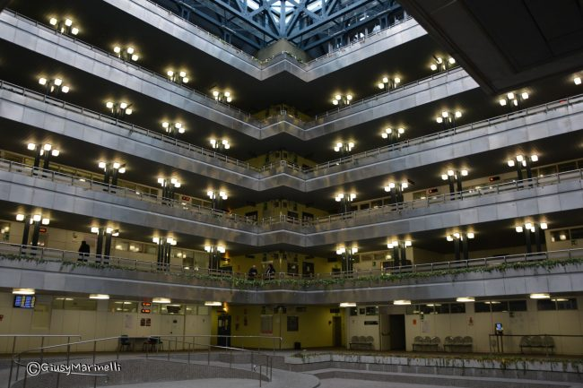

Il giorno in cui il diritto è diventato realtà: la mia esperienza al Tribunale di Ancona
La teoria che prende forma
All’interno del percorso di Educazione Civica, ho avuto l'opportunità di vivere un'esperienza che ha letteralmente dato forma e voce alle pagine dei nostri libri di testo: la visita di classe al Tribunale di Ancona. Spesso consideriamo la legge come un insieme astratto di regole o formule burocratiche da memorizzare, ma varcare la soglia di quel palazzo mi ha permesso di capire quanto il mondo legale sia dinamico, concreto e profondamente umano. Vedere giudici, avvocati e magistrati confrontarsi dal vivo mi ha trasmesso una nuova consapevolezza: la legalità non è solo un concetto teorico, ma una responsabilità collettiva che impatta direttamente sulla vita e sulla libertà di tutti noi.
L'udienza: un incredibile scambio di identità
Durante la mattinata abbiamo assistito da vicino allo svolgimento di diverse udienze, ma c’è stato un caso specifico che mi ha spinto a riflettere profondamente: un incredibile scambio di identità. Una persona era stata confusa con un ricercato a causa di una perfetta omonimia, un errore apparentemente banale dovuto a un controllo superficiale, ma dalle conseguenze potenzialmente drammatiche. Gli unici elementi a favore dell'imputato erano la testimonianza di chi aveva visto il vero ricercato e un dettaglio burocratico fondamentale: una data di nascita diversa. Questo caso mi ha fatto toccare con mano quanto sia sottile il filo della giustizia e quanto un piccolo errore possa stravolgere la vita di un cittadino innocente.
Il valore delle garanzie costituzionali
Proprio questa vicenda mi ha fatto comprendere l’importance cruciale del diritto alla difesa, della presunzione di innocenza e, soprattutto, del valore inestimabile delle prove e delle garanzie costituzionali. Ho capito che i dettagli, in un’aula di tribunale, non sono semplici formalità, ma lo scudo che protegge l'individuo dagli errori giudiziari. Torno da questa esperienza con uno sguardo molto più maturo e consapevole: la macchina della giustizia è complessa perché complessa è la natura umana, e questa visita mi ha insegnato che tutelare i diritti di ciascuno è il pilastro fondamentale su cui si regge l'intera nostra società.
Immagini dell'esperienza

